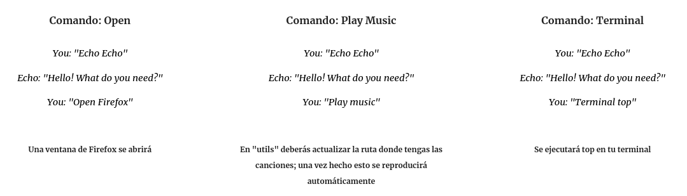
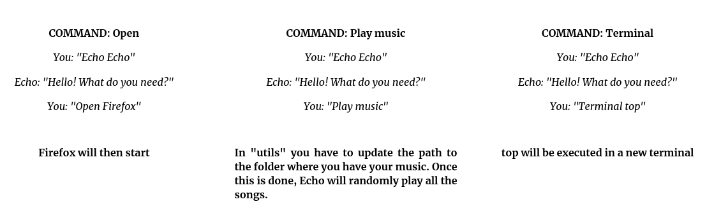

22-09-2021
En un pequeño descanso de Arachne, decidí programar mi propia Alexa. Es algo que siempre he querido hacer, porque me gustaría desarrollar un asistente virtual a mi propiass necesidades, programando y automatizando mis tareas. Aquí es cuando surge “Echo”.
En unas pocas líneas tenía las funcionalidades básicas en menos de media hora … ¡y ya respondía a varios de mis propios comandos! No es muy complicado de hacer, y puede tener multitud de aplicaciones como la domótica.
import speech_recognition as sr
import utils
recognizer = sr.Recognizer() #Init the audio recognizer
record_file = sr.AudioFile('../core_records/record.wav') #Select the file
while True:
utils.echo_call(recognizer,record_file)
utils.tex2voice("Hello! What do you need?")
utils.order_call(recognizer,record_file)Para que el asistente entienda qué es lo que le estamos diciendo, vamos a usar SpeechRecognition, una librería de Python la cual importaremos como ‘sr’.
Como puedes ver en la imagen, el proceso se repite infinitamente: llamamos a Echo, nos pregunta que es lo que queremos y nosotros se lo decimos.
def tex2voice(text):
language = 'en'
myobj = gTTS(text=text, lang=language, slow=False)
myobj.save("../core_records/echo.mp3")
os.system("mpg321 ../core_records/echo.mp3")Para que Echo nos responda (tal y como hace Alexa), usaremos esta vez la librería GTTS. Cada vez que queramos que el asistente nos diga algo usaremos la función “text2voice”.
Las utilidades están en el archivo utils.py
Más abajo encontrarás algunos ejemplos del uso de Echo y el enlace al repositorio de Github donde encontrarás el código necesario de la versión básica de Echo … ¡ para que cualquiera pueda participar y contribuir al crecimiento de su propio Echo!

In a little break from Arachne, I decided to program my own Alexa. It’s something I’ve always wanted to do, because I would like to develop a virtual assistant to my own needs, programming and automating my tasks. This is when “Echo” came up.
In a few lines I had the basic functionalities in less than half an hour … and it already responded to several of my own commands! It is not very complicated to do, and can have a multitude of applications such as home automation.
import speech_recognition as sr
import utils
recognizer = sr.Recognizer() #Init the audio recognizer
record_file = sr.AudioFile('../core_records/record.wav') #Select the file
while True:
utils.echo_call(recognizer,record_file)
utils.tex2voice("Hello! What do you need?")
utils.order_call(recognizer,record_file)In order for the assistant to understand what we are saying, we will use SpeechRecognition, a Python library which we will import as ‘sr’.
As you can see in the image, the process is repeated endlessly: we call Echo, it asks us what we want and we tell it what we want.
def tex2voice(text):
language = 'en'
myobj = gTTS(text=text, lang=language, slow=False)
myobj.save("../core_records/echo.mp3")
os.system("mpg321 ../core_records/echo.mp3")To make Echo respond to us (as Alexa does), this time we will use the GTTS library. Every time we want the assistant to tell us something we will use the “text2voice” function.
The utilities are in the file utils.py
Below you will find some examples of the use of Echo and the link to the Github repository where you will find the necessary code of the basic version of Echo … so that anyone can participate and contribute to the growth of their own Echo!
